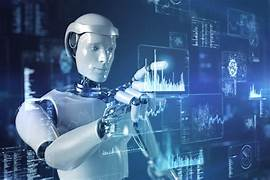

La regulación y la ética de la Inteligencia Artificial se refieren a las normas, leyes y principios que buscan garantizar que esta tecnología se utilice de forma responsable y segura.
La regulación consiste en crear leyes y políticas para controlar el uso de la IA y evitar problemas como el mal uso de datos personales, la discriminación en los algoritmos o el uso de tecnologías peligrosas.
Por otro lado, la ética se enfoca en los valores y principios que deben seguir las personas y empresas que desarrollan o utilizan inteligencia artificial. Algunos de estos principios incluyen el respeto a la privacidad, la transparencia en el uso de la tecnología y el uso responsable de la información.
.jpg)
El objetivo de la regulación y la ética es asegurar que la inteligencia artificial beneficie a la sociedad sin causar daños ni afectar los derechos de las personas.
La regulación y la ética de la inteligencia artificial son aspectos fundamentales para asegurar que esta tecnología se desarrolle y utilice de manera responsable, segura y beneficiosa para la sociedad. La “regulación” se refiere al conjunto de leyes, normas, reglas y políticas establecidas por gobiernos u organizaciones para controlar el uso de la inteligencia artificial. Por otro lado, la “ética” se refiere a los principios, valores y normas morales que guían el comportamiento humano y el uso de la tecnología.
.jpg)
En primer lugar, uno de los objetivos más importantes de la regulación es la protección de los datos personales. La protección de datos implica garantizar que la información de las personas sea utilizada de manera segura, responsable y con consentimiento. Dado que la inteligencia artificial necesita grandes cantidades de datos para funcionar, es fundamental establecer normas que eviten el uso indebido de esta información. Por ejemplo, las leyes pueden exigir que las empresas informen a los usuarios sobre cómo se utilizan sus datos..jpg)
Otro aspecto clave de la regulación es la transparencia. La transparencia se refiere a la capacidad de entender cómo funcionan los sistemas de inteligencia artificial. Esto significa que las personas deben poder conocer cómo se toman las decisiones,ué datos se utilizan y cuáles son los posibles riesgos. La falta de transparencia puede generar desconfianza y dificultar la supervisión de estos sistemas.
La responsabilidad es otro elemento fundamental. La responsabilidad implica que debe existir claridad sobre quién es responsable cuando un sistema de inteligencia artificial comete un error o causa daño. Esto puede incluir a desarrolladores, empresas o usuarios. Sin un marco de responsabilidad claro, puede ser difícil resolver problemas o proteger a las personas afectadas.
La regulación también busca prevenir el uso indebido de la inteligencia artificial. Esto incluye evitar prácticas como la manipulación de información, la creación de contenido falso, la vigilancia excesiva y el uso de la tecnología con fines dañinos. Por ejemplo, se pueden establecer normas para limitar el uso de sistemas de reconocimiento facial o para controlar la difusión de información falsa.
Otro aspecto importante es la seguridad. Los sistemas de inteligencia artificial deben ser seguros, confiables y resistentes a fallos o ataques. Esto es especialmente importante en áreas críticas como la salud, el transporte, la banca y la seguridad pública. La regulación puede exigir pruebas y certificaciones para garantizar que los sistemas funcionen correctamente.
La equidad es también un principio importante dentro de la regulación. La equidad busca que los sistemas de inteligencia artificial no discriminen a las personas y que sus beneficios estén disponibles para todos. Esto implica evitar sesgos en los algoritmos y garantizar un acceso justo a la tecnología.
Además, la regulación enfrenta varios desafíos. Uno de los principales es la rapidez con la que avanza la tecnología. La inteligencia artificial evoluciona constantemente, lo que hace difícil que las leyes se mantengan actualizadas. Por ello, es necesario que la regulación sea flexible y adaptable

Otro desafío importante es la cooperación internacional. La inteligencia artificial es una tecnología global, lo que significa que su regulación requiere colaboración entre países. Sin esta cooperación, pueden existir diferencias en las leyes que dificulten el control de la tecnología.
La ética en la inteligencia artificial se enfoca en los valores y principios que deben guiar su desarrollo y uso. La ética busca asegurar que la tecnología se utilice para el beneficio de la humanidad y que no cause daño.
Uno de los principios más importantes es la justicia. La justicia implica que los sistemas de inteligencia artificial deben ser justos y no discriminar a las personas. Esto significa que deben tratar a todos de manera equitativa, sin importar su origen, género o condición social.
Otro principio fundamental es la transparencia. La transparencia ética implica que los sistemas deben ser comprensibles para las personas. Esto permite generar confianza y facilita la supervisión.
La responsabilidad ética también es clave. Esto significa que las personas y organizaciones que desarrollan o utilizan IA deben asumir las consecuencias de sus acciones. No se puede culpar únicamente a la máquina.
La privacidad es otro valor importante. La ética exige que los datos personales sean protegidos y utilizados de manera responsable.
La seguridad es también un principio ético. Los sistemas deben ser diseñados para evitar daños y funcionar de manera confiable.
Además, la ética promueve el bienestar social. Esto significa que la inteligencia artificial debe utilizarse para mejorar la calidad de vida de las personas, por ejemplo en la salud, la educación y el desarrollo social..jpg)
Otro aspecto importante es la sostenibilidad. La IA debe desarrollarse considerando su impacto ambiental, ya que su uso puede consumir grandes cantidades de energía.
También se deben considerar las consecuencias a largo plazo. La inteligencia artificial puede cambiar la forma en que las personas trabajan, se comunican y viven, por lo que es importante analizar sus efectos futuros.
Finalmente, la ética busca equilibrar el avance tecnológico con el respeto por los derechos humanos. Esto significa que el desarrollo de la IA no debe poner en riesgo la dignidad, la libertad o la seguridad de las personas. REGULACIÓN Y ÉTICA
1. Regulación: El fin del "Lejano Oeste" digital
En 2026, la regulación ya no es opcional. El modelo predominante es la **Ley de IA de la Unión Europea (EU AI Act)**, que ha servido de base para legislaciones en todo el mundo.
* **Clasificación por Riesgo:** No se regula la tecnología en sí, sino su **aplicación**.
* **Riesgo Inaceptable:** Sistemas de "puntuación social" (al estilo de algunos sistemas de crédito social) y la manipulación de la voluntad humana están **prohibidos**.
* **Alto Riesgo:** Si usas IA para contratar personal, admitir estudiantes o en diagnósticos médicos, debes cumplir con auditorías estrictas y supervisión humana obligatoria.
.jpg)
* **Transparencia de Modelos Fundacionales:** Los creadores de grandes modelos (como GPT-X o Claude) deben declarar qué datos usaron para el entrenamiento, respetando las leyes de derechos de autor.
* **Marca de Agua Obligatoria:** Todo contenido generado por IA (imagen, audio o video) debe incluir metadatos o marcas visibles que indiquen su origen sintético para combatir la desinformación.
2. Ética: Los 4 dilemas actuales
Más allá de lo que dice la ley, la ética se enfoca en lo que es "justo". Estos son los frentes de batalla en 2026:
A. Sesgo y Equidad
Los algoritmos aprenden de datos humanos, y los humanos tenemos prejuicios.
> **El reto:** ¿Cómo evitamos que una IA de contratación descarte automáticamente a mujeres o minorías porque "históricamente" esos puestos fueron ocupados por otros perfiles? La ética exige **curación de datos** y no solo volumen.
B. Explicabilidad (IA de Caja Negra)
Es el derecho a entender el "porqué". Si un banco te niega un préstamo mediante un algoritmo, tienes derecho a una explicación lógica. La ética actual presiona para que los modelos sean interpretables, no solo eficientes..jpg)
### C. Responsabilidad (Accountability)
¿Quién es el responsable si un coche autónomo causa un accidente o una IA médica da un diagnóstico erróneo?
* ¿El programador?
* ¿La empresa que lo implementó?
* ¿El usuario?
La tendencia ética es que siempre debe haber un **"humano en el circuito"** (*Human-in-the-loop*) que valide la decisión final.
D. Impacto Ambiental
Entrenar un modelo de IA consume cantidades masivas de energía y agua (para enfriar centros de datos). En 2026, la **IA Verde** es un imperativo ético: optimizar modelos para que sean más pequeños y eficientes energéticamente.
## Comparativa: Regulación vs. Ética
| Característica | Regulación (Ley) | Ética (Principios) |
| **Naturaleza** | Obligatoria y punitiva (multas). | Voluntaria y normativa. .jpg)
| *Objetivo*| Seguridad jurídica y protección de derechos. | Justicia, bienestar y valores humanos.
| *Alcance* | Jurisdicciones específicas (países/bloques). | Universal (idealmente). |